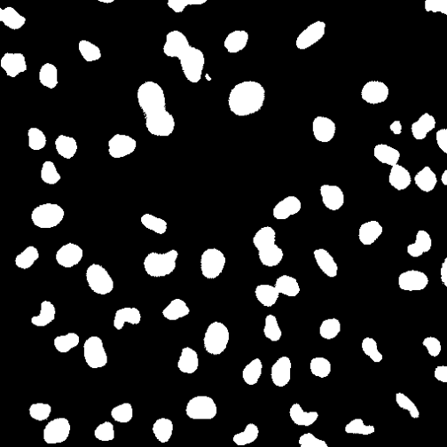
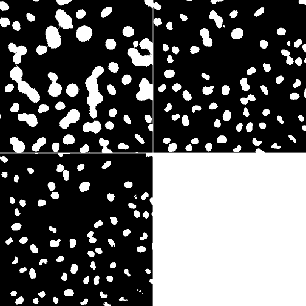
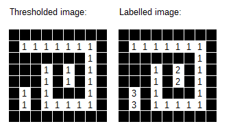
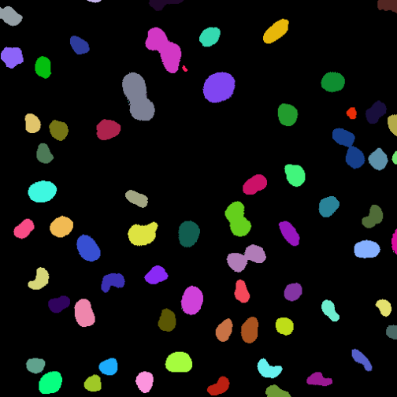
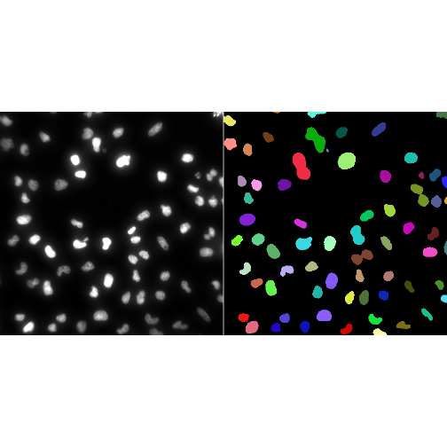
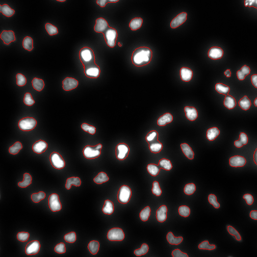

Image Segmentation
Last updated on 2026-08-17 | Edit this page
Estimated time: 75 minutes
Overview
Questions
- What is image segmentation?
- How can objects be separated from the background?
- What is a binary mask?
- How can individual objects be identified?
- How can segmentation results be visualised and assessed?
Objectives
- Define image segmentation.
- Create binary masks using thresholding.
- Label connected objects.
- Count segmented objects.
- Visualise segmentation results.
- Recognise common segmentation challenges.
Introduction
In the previous lesson we used thresholding to create binary images.
Thresholding allows us to separate pixels into two classes:
Foreground (These pixels are those you care about - objects)and
Background (These are the pixels you don't care about)However, biological image analysis often requires more than simply identifying foreground pixels.
For example, we may wish to:
- count nuclei
- measure cell size
- quantify fluorescence intensity
- compare object shape descriptors
To perform these measurements, we must first identify individual objects.
This process is known as image segmentation.
What Is Segmentation?
Segmentation is the process of dividing an image into meaningful regions.
In bioimage analysis these regions often correspond to biological structures such as:
- nuclei
- cells
- tissues
- organelles
Conceptually:
Image -> Segmentation -> Objects + BackgroundThe goal is to identify the set of pixels belonging to each biological object.
Segmentation Is Often the Most Important Step
Many downstream measurements depend on segmentation quality.
Poor segmentation can lead to inaccurate biological conclusions.
Reading an Image
Load EBImage.
R
library(EBImage)
Read an image.
R
img <- readImage(
system.file("images", "nuclei.tif", package = "EBImage"))
#Select a single frame for demonstration purposes.
img <- img[,,1]
If you want, display the image with display(img). By
now, you probably knwo what this image looks like.
Creating a Binary Mask
A common segmentation workflow begins with thresholding.
Create a binary mask.
R
mask <- img > 0.2
Display the result.
R
display(mask)

The resulting image contains only two classes:
Foreground (things you care about, your 'objects')
Background (things you don't care about)or equivalently:
TRUE / 1
FALSE / 0Challenge
Which pixels become foreground after thresholding?
Pixels with intensities greater than the threshold value become foreground pixels. In some software (e.g. Fiji) you can specify which set of pixels becomes the background and which becomes the foreground.
Segmentation Depends on Threshold Choice
Different threshold values can produce very different segmentation results.
Create several masks.
R
mask_1 <- img > 0.1
mask_2 <- img > 0.2
mask_3 <- img > 0.3
Display them.
R
display(
EBImage::combine(
mask_1,
mask_2,
mask_3
),
all = TRUE
)

Notice how increasing the threshold changes the detected objects.
Challenge
Which threshold is likely to produce the largest foreground regions?
0.1
0.2
0.30.1Lower thresholds classify more pixels as foreground. Not necessarily more objects though, as each object must be separated from others by background pixels. Exploring thresholds is often part of an initial classification strategy.
A Binary Mask Is Not Yet Segmentation
Although the binary mask separates foreground from background, it does not yet identify individual objects.
Consider: Object A & Object B
Both may simply appear as foreground pixels.
To measure them separately, we must identify each object individually.
Connected Components Analysis
Connected-component labelling identifies sets of connected foreground pixels as unique objects. You can imagine that a labeller starts at a pixel with a value of 0 — remember, at this point, there are only 0s and 1s. It then traverses the entire matrix. Every time it encounters a pixel with a value of 1, it assigns it to the next value in turn. I.e. the first object gets that value 1, the second object gets the value 2 and so on, until every pixel has been visited. All the pixels that had a value of 0 remain 0, but every pixel that was 1 is now assigned to a unique number depending on the position of the object in relation to the starting point of the labeller. Every pixel that has value 1 is first checked to see whether it is connected to another pixel of value > 0 before it is assigned a new unique value. Pixel values are changed so that every pixel in a single object gets the same pixel intensity value.

Conceptually:
Binary Mask Image
↓
Connected Components Analysis
↓
Object Label ImageEach object receives a unique identifier. Note that the analysis has produced a new image with pixel values. We can visualise this image.
Labelling Objects
Label the objects in the mask. The bwlabel() function
from EBImage labels connected sets of pixels in a binary mask image. It
assigns a unique increasing integer starting from 1 to each separate
foreground object, treating pixels with a value of 0 as the background,
leaving them unaltered. The bwlabel image outputs a label
image. We can visualise this label image with the
colorLabels() function. . colorLabels() takes
a label matrix (i.e. a label image, typically from
bwlabel()) and returns a color-coded image where adjacent
objects are visually distinct.
R
labels <- bwlabel(mask)
Inspect the result.
R
display(colorLabels(labels))

Each colour represents a different object.
Colours Represent Labels
The colours in a labelled image do not represent intensity values.
They simply help us distinguish neighbouring objects.
Counting Objects
How many objects were detected?
Inspect the labels.
R
max(labels)
OUTPUT
[1] 74The largest label number corresponds to the total number of detected objects in the image.
Challenge
If the highest label value is:
17how many objects were detected?
17 objectsEach object receives a unique label.
Visualising Segmentation Results
Labelling allows us to visualise individual objects.
Visualising the labelled objects, as above, is helpful, but segmentation results are often easier to assess when displayed alongside the original image.
R
display(
EBImage::combine(
toRGB(img),
colorLabels(labels)
),
all = TRUE
)

Comparing the original image and segmentation result allows us to identify errors and missed objects.
Overlaying Labels on the Original Image
An alternative approach is to overlay the segmentation result on the
original image. The paintObjects() function in EBImage
highlights and marks segmented objects in an image. It outlines object
boundaries and/or fills their interiors using specified colors and
opacities, working closely with labeled masks from functions like
bwlabel().
R
overlay <- paintObjects(
labels,
toRGB(img)
)
display(overlay)

This allows the image data and segmentation result to be viewed together.
Challenge
Why is it useful to inspect segmentation overlays?
Overlays allow us to compare the segmentation directly with the original image.
This can reveal:
- missed objects
- merged objects
- incorrectly segmented regions
Common Segmentation Challenges
Segmentation is rarely perfect.
Common problems include:
- Missing Objects, if the threshold is too high.
- Real Objects are excluded.
- Noise, if the threshold is too low. -Background pixels are classified as objects.
- Merged Objects. Multiple closely spaced objects merge into one
object.
- Under represent the # of objects with the wrong shape.
- Fragmented objects. Single objects are fragmented into several
objects.
- Over represent the # of objects with the wrong shape.
There Is No Universal Threshold
Segmentation methods often need to be adapted to the image and biological question being studied.Exploratory analysis is used to determine a threshold.
Segmentation Supports Measurement
Once objects have been identified, we can begin to measure them.
For example:
- area
- shape
- perimeter
- intensity
Segmentation creates the link between image pixels and biological objects.
Without segmentation, object-based measurements are usually impossible.
Challenge
Why must segmentation usually be performed before measuring nuclear area?
Area measurements require the pixels belonging to each nucleus to be identified.
Segmentation determines which pixels belong to each object.
Looking Ahead
In this lesson we transformed image pixels into labelled objects. As welearned, a single threshold is often only the first step of creating a biologically meaningful segmentation. In the next lesson we will explore tools refine these masks, to make them more relevant. Only after we have a reasonable segmentation and labelling strategy, does it make sense to make measurements and extract quantitative information from biological images.
Key Points
- Segmentation divides images into meaningful regions.
- Thresholding can be used to create binary masks.
- Binary masks separate foreground from background.
- Connected-component labelling identifies individual objects.
- Each segmented object receives a unique label.
- Segmentation results should always be inspected visually.
- Segmentation quality influences all downstream measurements.
- Segmentation provides the foundation for quantitative image analysis.